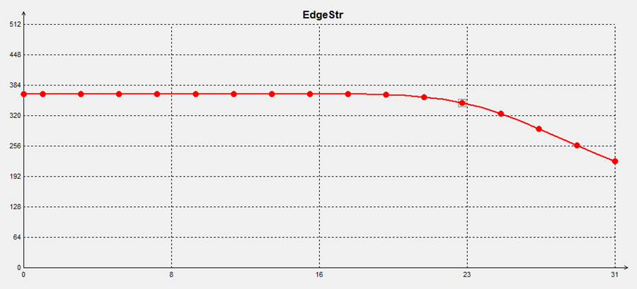
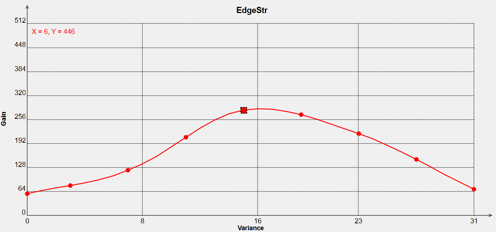

前言
前言
本文档详细描述了行车记录仪和无人机应用图像调试，同时提供了常见的问题处理方法。
与本文档相对应的产品版本如下。
本文档（本指南）主要适用于以下工程师：
- 技术支持工程师
- 软件开发工程师
在本文中可能出现下列标志，它们所代表的含义如下。


行车记录仪和无人机应用图像调优
概述
当前Hi3519DV500/Hi3516CV610针对消费类应用场景主要包括：行车记录仪、无人机、运动DV等产品形态，该部分当前主要介绍行车记录仪和无人机两种产品形态的调试框架，运动DV当前可以参考无人机产品形态的调试。
无人机航拍、运动相机作为近几年快速发展一种新的生活记录方式。图像效果主要追求真实、美和传统IPC使用场景和效果要求存在比较大差异。无人机一般使用在户外，白天和晚上都有使用，但是不追求极致黑光。对帧率要求较高，不会轻易降帧。无人机主要使用线性模式，对颜色亮度、清晰度噪声要求比较高。
行车记录仪现在已经成为车主必备设备，主要用途是防止碰瓷、车祸取证等。另外随着云服务的流行，许多车主会把行车记录仪录下的视频上传到云端与其他车主共享。这要求行车记录仪不仅要保证车牌路标清晰，还要求整体画面风格要偏向消费类，颜色和对比度要给人一种眼前一亮甚至大片的感觉。
行车记录仪和无人机应用图像质量调优
行车记录仪和无人机应用场景线性模式图像调试流程如图1所示，和录像应用场景基本一样。因为和传统IPC使用场景和对效果要求不一样，每个模块具体的调试策略会存在差异。

环境准备与通用参数标定
镜头的好坏对图像质量有重要影响，非常建议选择一颗与使用的sensor价格档位相匹配的镜头。评估镜头时需要从进光量、清晰度、畸变、紫边、炫光、CRA匹配等维度考虑，这些因素直接影响图像质量。镜头引起的一些效果问题只能通过后端ISP改善，不能彻底解决。
Sensor对接完成确定好镜头之后，需要进行标定工作。消费类产品使用的镜头视场角一般比较大，镜头shading（包括color shading）比较严重，如图1所示，如果不进行shading矫正，除了shading本身带来的偏色问题，很可能会导致AWB标定结果不准确，进而产生AWB偏色问题。
- 应当首先标定镜头的shading参数，如图2所示。
-
用shading标定结果对采集好的不同色温下的24色卡进行矫正，如图3所示。
- 红色框是shading矫正按钮;
- 蓝色框是24色卡原始RAW数据；
- 绿色框是矫正后24色卡的名称。
-
最后，用矫正后的24色卡RAW数据进行AWB和CCM参数标定。详细参考《图像质量调试工具使用指南》“使用标定结果矫正其他 RAW 的功能”小节。如果使用MLSC还不能完全校准color shading，可以考虑使用ACS标定。


在标定CCM参数时，可以为了风格，适当把绿色矫正往翠绿方向调试，绿色和蓝色的饱和度更高一些，这样在白天户外场景看上去会很通透，给人第一眼的主观效果很清晰舒爽。
线性模式可以直接使用CCM标定出来的参数；WDR模式因为有DRC的影响，需要对标定的参数进行图像整体饱和度矫正，一般是通过DRC模块中global_color_ctrl参数降低饱和度，具体方法可以使用标定参数在灯箱环境下进行指标测试，然后通过调整saturation调整饱和度到适合的程度。
WDR下颜色调试方法详细可以参考《ISP 图像调优指南》"WDR模式图像质量调优”章节。
最后根据标定文档标定BayerNR的噪声模型参数。详细参考《图像质量调试工具使用指南》“NR 标定结果验证”章节，如图4所示。在线抓raw验证后，观察红色的采样点和蓝色的理论噪声标定曲线的吻合程度，如果红色点离偏离蓝线较远，说明标定参数可能存在问题。也可以参考工具计算出的最大相对误差比例，重新审视标定参数的正确性。详细参考《图像质量调试工具使用指南》“NR 标定结果验证”章节。

行车焦距一般在4mm左右，在对焦时一定要注意距离。行车固定镜头时，打胶也是一个技术活，因为硬件原因，所使用的镜头与底座经常不是很匹配，一般表现是镜头拧上去比较松，这样在打胶时稍不注意就容易把镜头碰糊。所以在遇到这种情况，可以先用胶枪固定住镜头，等胶完全凝固后，拧动镜头（注意不要把打上去的胶搞掉），这样镜头在原来打胶的作用下就不会那么松动。在这些操作完成后，再重新对焦打胶，可以相对保证图像清晰度。
对打胶时，还需要注意：镜头漏光，因为镜头跟底座不匹配或者镜头质量不好等原因，很容易产生漏光，这对图像质量有很大的影响，比如不同光照环境下漏光的强弱也有不同，强的时候会把图像搞的很糊，弱的时候没有明显的影响，这样就会出现相同时间段不同光照环境图像表现差异很大。现在已经有了黑色热熔胶，在打胶固定镜头后，一定要在检查一遍sensor和镜头，把所有有可能产生漏光的地方全部打上黑色热熔胶，确保完全不会漏光。
从软硬件各个角度，对效果调试相关的问题进行了汇总，建议参考图5进行逐项排查，先确认软硬件各方面都没有问题后再进行调试。

行车记录仪产品形态调试
亮度维度中的AE调试属于行车记录仪产品形态的调试关键模块之一，会直接影响静止和运动清晰度、收光等图像效果。
-
AE权重的调试和确认
要确定AE Weight表设置，需要根据行车记录仪的典型应用场景来设置。如图1所示。可以看到下1/5蓝框部分，主要是车头，亮度与车身颜色有关，白车会偏亮一些，黑色会偏暗一些，上1/4蓝框部分主要是天空，明显可以看出白天天空很亮，晚上天空很黑，这些都不是行车关注部分，这些部分在不同环境下又会对整体亮度产生比较大的影响，因此建议这部分权重为0，避免非重点关注区域对AE产生影响；中间黄框部分，是行车最主要关注部分；左右绿框部分，虽然也有大量关注内容，但是相对于中间黄框部分，并没有那么重要，并且有一个特点，越靠近中间部分权重越高，越靠近两边权重越低。由此可以大致推断出AE Weight表：蓝框部分权重全部为0，黄框部分权重最高，绿框部分权重由中间向两边逐渐降低，如图2所示。
 注意：
注意：
在实际效果调试中，对于不同分辨率图像，车头和天空占比有些差异，比如16:9和4:3对应的车头和天空部分占比就有所不同，因此需要根据实际场景进行一些调整。 -
AE目标值
-
线性模式曝光目标值
AE Weight确定下来后，紧接着就是调试AE Compensation。设置AE Compensation最直接的要求就是保证亮度合理，这个主要由主观感受来决定，很难有一个明确值。但根据调试经验来看，最主要要求是优先保证重点关注区域（图1中绿框和黄框部分）的亮度在合理水平，另外建议选择一个同档次的竞品作为参考。
测试的主要场景有白天和晚上，白天场景主要有晴天和阴天的区别：
- 晴天最主要的挑战是逆光场景，背光车牌很容易变的黑暗，此时需要设置相对较高的AE Compensation来保证亮度，否则背光车牌就很难看见；
- 阴天整体都比较对比度低一些，此时也需要设置相对较高的AE Compensation来保证亮度，整体来说，白天的曝光目标值可以设置较高一些。
晚上场景车牌亮度主要受路灯和车灯的影响，车灯的影响最大。尤其是远光灯照在前车身上反光时会非常亮；另外车灯亮度非常集中，除了车灯照射到的地方，其他地方都比较暗，所以夜晚场景曝光时间和ISO都会增加，输出信号信噪比会降低。根据上述特点，晚上的目标值应该设置相对低一些，在保证两旁（图1中绿框和黄框部分中绿框区域）能够看到内容的前提下尽量的小，这样既可以保证重点关注区域（图1中绿框和黄框部分中黄框区域）中的车牌尽量不过曝，又可以减少噪声表现。
线性模式下曝光目标值大致如图3所示，目标值随着曝光量的增加而减少，降低到一定程度保持不变。即白天使用比较高的曝光目标值，晚上使用小一些的曝光目标值。
-
WDR模式曝光目标值
与线性有所不同，WDR有长短帧曝光，就可以同时兼顾亮区和暗区的亮度，因此为了保证暗区的亮度，可以把目标值设的相对线性高一些。如果遇到太阳光强烈的场景，可以通过调整曝光比来降低短帧的亮度（一般白天曝光比设置为4倍~9倍），这样可以保证高亮区不过曝。
-
-
AE Route设置
-
线性模式AE Route设置
行车记录仪对曝光时间很敏感，在白天，曝光时间长一些就很有可能出现运动快导致车牌模糊问题；在晚上，曝光时间和增益设置的不合理，就有大部分场景就有可能出现工频闪或者运动模糊，因此合理设置AE Route很重要。
感光度比较好的sensor，可以现在曝光优先使用比较高的增益；感光度比较差的sensor，由于噪声比较大，因此需要优先把曝光时间起的相对长一些。比如A sensor感光度相对较好，AE Route可以设置成图4的路径；B sensor感光度比较差，AE Route可以设置成图5的路径。但还是要根据不同sensor和实际使用场景来调整。
对比图4和图5可以发现，曝光时间在10ms之前，也即白天时，两者差异相对不大，因为白天光照充分，信号充足。曝光时间大于10ms时，两者差异就很大了，B sensor 由于感光差会优先把曝光时间增加到20ms乃至30ms，而A sensor由于感光好 会优先把增益提高到32倍，然后才把曝光时间延长到30ms，这个差异主要是因为sensor噪声水平决定的。
- 对比白天，两者都是为了保证运动清晰度，曝光时间没有直接起到10ms，而是时间和增益交替增加。
- 对比晚上，曝光时间节点基本上都是10ms、20ms、30ms，再根据不同sensor的特定增益限制，这样就可以最大限度的避免工频闪的出现。
-
WDR模式 AE Route设置
WDR模式的AE Route在白天与线性模式没有很大区别，都是要争取尽可能短的曝光时间，这样才能尽最大可能避免车牌因为运动而模糊。
在晚上，WDR模式的AE Route与线性模式就有很大的区别。尤其是现在WDR可以分别配置长短帧的AE Route，给了WDR更多的灵活性。
WDR模式的AE Route有两种调试方式。
第一种：跟线性一模一样，只控制长帧的AE Route，短帧路径通过长帧计算得到，可以参考线性AE Route设置。
第二种：长短帧路径分别配置，这样可以更灵活控制长短帧的曝光时间和增益。使用第二种方式的主要原因：晚上时，因最小曝光比限制（现在晚上最小曝光比设置是4倍），如果不特殊处理，短帧曝光时间很难达到10ms，这样很容易出现工频闪，噪声也会比较大，画面体验感就不好，因此需要对短帧曝光进行“特殊”处理。这里说明此种方式如图6所示，这里是长帧优先原则。
白天大部分场景，只有天空和高亮反光区才容易过曝，而车牌路标等标志物基本上都不会过曝，这些标志物都是由长帧数据来表达，因此白天一定要控制好长帧的曝光时间；晚上时，需要把长帧限制到20ms，这样绝大部分画面才不会出现工频闪。因此在设置AE Route时应该选择“长帧优先”的模式，如果选择“短帧优先”，则会因为算法内部限制，导致长帧在白天增益无法增加（因为短帧优先增加曝光时间到10ms从而限制了增益的增加），只能增加长帧曝光时间，就会产生运动模糊。
如图6所示，“长帧优先”模式下，长帧在白天那一段会分的比较细，这样可以确保白天的运动清晰度，在晚上迅速达到10ms、20ms，保证夜晚长帧不会出现工频闪。短帧路径则比较简单，增益增加到2倍后，直接把曝光时间增加到10ms，然后曝光时间就不再改变，后面就只改变增益。短帧这样做的好处是可以优先增加曝光时间，改善短帧的信噪比，同时不会产生工频闪。
注意：
1. 使用这一模式最好是sensor支持长短帧的增益分别配置，这样更容易实现，并且信噪比也是最好的，sensor如果不支持长短帧增益分别配置，使用这一模式时，AE将会使用WDR的Gain分配增益。
2. 要协调长帧和短帧的节点控制，保证短帧的节点都能被取到。以上参数只是参考，不同sensor需要实际场景效果进行调整。
-
-
WDR模式曝光比调试
在WDR模式下，如果曝光比过低，长短帧亮度差不多，这样体现不出WDR模式的优势；如果曝光比过高，由会因为短帧太暗导致画面整体都比较暗，因此需要合理设置曝光比。
根据历史经验，白天和晚上场景最小曝光比设置到4倍比较合适，短帧亮度合适，但这个是推荐经验值，需要根据不同sensor和实际效果进行调整。
- 最大曝光比在白天一般设置到9倍，这样可以保证在进出隧道时AE可以更快的收敛，尤其是在出隧道时（由暗到亮），短帧可以迅速达到合适的亮度值，保证亮区不过曝。
- 晚上最大曝光比会限制到6倍，与白天相比会有所减少，主要因为晚上整体都比较暗，如果曝光比过大，合成后的图像会显得很黑。某sensor的曝光比限制如图7所示。


调试对比度主要涉及到Gamma、DRC、Dehaze、LDCI等几个模块，颜色风格涉及到CCM、CLUT等模块，具体调试方法参考算法调试文档，这里只讲述主要风格。
-
行车线性模式
如图8所示，白天要有比较强的对比度，整体色调偏冷一些，颜色要艳丽，主要体现在蓝色要够蓝，绿色要翠绿，要让第一眼看上去有一种视觉冲击感，这样就比较吸引眼球，风格也比较讨喜。具体调试时，可以通过Gamma、Dehaze、LDCI把整体画面对比度提高，这个时候有可能暗区比较偏暗，然后再通过DRC适当增加一些暗区的亮度即可。
在调试颜色时，可以先通过CCM把整体颜色的饱和度提高和主要颜色还原准确，针对Hi3519DV500芯片可以通过CLUT调到自己喜好色即可（如绿色和蓝色），针对Hi3516CV610芯片，当前没有CLUT模块，只能够通过color_sector模块调试。
-
行车场景WDR模式
WDR模式的风格与线性相似，白天要有比较强的对比度，整体色调偏冷一些，颜色要艳丽，主要体现在蓝色要够蓝，绿色要翠绿。夜晚主要是对光源色的不同处理。
但是在调试上与线性有所区别，主要体现在DRC的调试，WDR的长帧已经足够亮，因此在调试DRC时，采用还原长帧的策略：高亮区选择短帧，其他区域与长帧保持一致即可。这需要用到DRC自定义曲线，并且在不同曝光比下使用不同的曲线，现在的做法是手动配置整数曝光比（4/5/6/7/8/9）的曲线，非整数曝光比的曲线进行差值。
在确定好DRC的曲线后，调试Gamma、Dehaze和LDCI来调试画面整体的对比度和局部对比度，保证画面整体通透。调试颜色时也需要先DRC曲线，然后再调试CCM保证整体颜色和饱和度处在合理值，因为DRC很有可能提高饱和度，同时确定主要颜色还原准确，最后通过CLUT把个别颜色调到期望值。WDR下颜色调试方法可以参考《ISP 图像调优指南》“WDR模式图像质量调优”章节。

行车记录仪有以下两个特点：
- 场景变化极其复杂而且快，受到写SD卡速度的限制，最大码率受到限制；
-
时域去噪强度不能开的很强，否则运动拖尾会很严重。因此，对于行车记录仪，不可能保证图像完全清晰的同时噪声完全没有，不能保证每一个细节都存在，在噪声和清晰度间要有所舍取。下面将分别从白天和晚上两个角度描述清晰度和噪声的调试方法（WDR和线性调试方法相似，只是强度不同）。
-
白天场景清晰度噪声调试方案
白天光照充足，曝光时间一般都很短，大概在1ms左右，此时信号也会很好，因此基本上不用担心噪声过大的问题，因此去噪强度不用很强。3DNR的时域去噪强度也很弱，不同芯片参数可能不同，但是方向是一致的，math和tfs调的都很弱，只要能压住大部分的大颗粒跳动的噪声即可。图9为Hi3516CV610 3DNR示例。
时域去噪调完之后就是清晰度和空域去噪的调试，如图10所示。
大部分场景：中间是道路，两旁是行道树，时不时右上方或者上方有路标牌，其他车辆主要出现在中间前方或者左右斜前方。
在这里，首先要明确行车重点关注的内容：即中间车辆的车牌和旁边的路牌；而行道树和路面并不是重点关注内容，如果清晰度好仅仅起到锦上添花的作用。
在调试时，重点优先保证调试车牌和路标的清晰度，而这两者的边缘，大部分都属于强边缘范围，因此在调试sharpen时，要把强边缘适当的增强；同时为了保证边缘更加凸显锐利度，可以适当增加黑白边的锐度，这样，车牌和路牌看起来有较强的层次感， 也更清晰锐利。
不要一味追求强边缘锐度而过度增强强度，过度的锐化强边缘，会导致边缘很粗，这样比较小的字会因为边缘过粗而导致看不出，在主观效果上也会很差。参数如图11所示，具体数值大小可根据不同sensor上下调整。
-
调试完强边缘后，就是细节的调试，树叶和路面都有很多细节，如果全部锐化出来，会对编码造成很大的压力，码率不够用，会产生很多编码块，这样反而会更多的损失细节，同时主观效果也会很差；并且，因为车辆高速运行，其实很多细节即使能够锐化出来也会因为车速过快而看不清；同时也会带来很多的噪声，因此，不建议行车保留过多的细节。但也不能不留细节，如果树叶和路面全是模糊的，画面就会显的很平，没有层次感， 主观效果会很差。
因此，建议保留适当的细节，主观效果大致可以归结为：
-
清晰度确定之后，就是空域去噪的调试，其实空域去噪和清晰度是协同调试，主要目标都是为了增强强边缘，保留部分细节，去掉无用的噪声。当前3DNR的调试原则是可以用中间两级的运动区域空域去除相关的颗粒噪声，最后一级用于增强；图13为Hi3516CV610芯片3DNR空域相关参数示例。
-
-
夜晚场景清晰度噪声调试方案
夜晚主要特点：
- 光照不充足，信噪比差，噪声大；
- 亮度不均匀，有车灯的地方很亮，没有车灯或者路灯的地方就很暗，这样不同亮度区域的信噪比也不相同。
针对第一个特点，需要随着曝光量的增加，来增加时域去噪的强度，保证画面没有明显大颗粒跳动的点即可，过强会有运动拖尾现象。这个需要随着ISO的增加而增强，如图14所示，是ISO1600的情况下时域去噪的参数，与图15（ISO100参数）比，黄框中的值都变大很多，即明显增强了时域去噪强度。
图 14 Hi3516CV610 iso1600时域相关参数

同白天一样，时域去噪确定好之后，就是清晰度的调试。晚上典型场景如图15所示，有灯照的地方就比较亮（红框、蓝框），没有灯照的就很暗（黄框）。
首先对亮暗区域的锐化进行区分，亮区信噪比相对较好，锐化不出过多的噪声，暗区信噪比差，稍微锐化过强就全部是噪声。因此在锐化时，要对暗区锐化进行适当的减弱。在Hi3519DV500/Hi3516CV610上参数大致如图16所示，前半部分（暗区部分）适当降低锐化程度。具体参数值随曝光量和不同sensor而不同。
从图15还可以看到，夜晚主要存在的都是强边缘，树叶、路面等细节基本上都看不到，这也成为夜晚的主要调试方向：夜晚主要增强大边，细节等都可以在一定程度上忽略不计。如图17所示，是ISO1600下TextureStr和EdgeStr的值，TextureStr的值整体降低很多，EdgeStr的值稍微有些增加。降低TextureStr的值就是为了降低细节锐化强度，保证基本细节存在的前提下（保证主观看上去有一定的层次感，不会感觉画面是平的），尽可能减少细节的锐化，这样会降低很多噪声。EdgeStr稍微增强，是因为sensor输出信号上，夜晚里的强边缘不如白天明显，边缘去噪强度也会更强，但在主观感受上不能比白天差，因此需要适当增强EdgeStr来保证效果，同时还要稍微增加黑边的强度（一般比ISO100的值要大），不增强白边强度（与ISO100相当或者适当增加一些或者减少一些），是因为夜晚对白色噪点很敏感。在sharpen整体锐化上，都要往强边缘上倾斜，即DetilCtrl值会随着ISO的增加而小于128且越来越小。
图 17 ISO1600下TextureStr和EdgeStr参数示例


锐化基本调完之后就是空域去噪的调试，与白天一样，去噪应该与清晰度协同调试。主要目标也是为了增强强边缘，保留基本细节，去掉绝大部分的细碎噪声。如图18所示，3DNR主要作用也是增强大边，去除细碎噪声。
图 18 Hi3516CV610 ISO1600 空域去噪参数示例

与图13对比，可以看到去噪参数强度明显增加，边缘增强参数稍微增强·。
最终的主观效果：
- 天空和路面没有明显的噪声躁动，基本上都是抹平的；两旁的行道树、建筑物等细节可以没有，但是要有较为明显的边缘，会给人一种立体的感觉；
- 车和路牌的边缘比较明显，尤其是有光照时，应该有很明显的边缘锐利感。
以上参数只是其中一种调试风格，在实际调试中应该根据不同sensor特定进行调整。


无人机产品形态调试
无人机产品形态的调试往往比较关注：色彩维度、对比度维度、清晰度噪声维度以及防抖相关的调试等。


-
镜头Shading的确认，镜头和sensor的CRA不匹配会造成color shading现象，画面不同部位颜色存在差异，如图3所示，一个典型存在颜色color shading的场景。在分析颜色问题之前一定要确认是否和color shading相关。如果传统的MLSC不能解决各个色温的下的Color shading问题，可以考虑使用ACS补偿。详细可以参考《图像质量调试工具使用指南》“ACS 标定”小节。当前由于标定ACS在产线量产存在一定的复杂性，优先推荐客户选择镜头和sensor的CRA进行匹配，避免产生color shading现象。
-
AWB调试：AWB调试主要包括静态白平衡系数和普朗克曲线的标定，当前需要针对抓取标定的数据进行标定得到，具体可以参考《ISP 图像调优指南》“线性模式图像质量调优”小节中色彩维度的步骤1，AWB当前调试的原则尽量保证白色和灰色在不同色温下都能够还原准确。
-
CCM模块调试：标定完CCM矩阵后，可以使用Color Checker工具来检查24色卡的color error，重点关注肤色、蓝色、绿色、红色等色块的色调和饱和度的偏移方向。如图5所示，肤色色块1和2，饱和度偏高色调有些偏紫，红色色块15色调偏黄饱和度偏高。
如果某个颜色色块偏差比较大，可以在标定CCM的时候，加大对应色块的权重，如图6黄色框所示。另外在CCM标定时有如下两点建议。
- Gamma导入使用当前场景使用的值，不要使用默认的sRGB、BT709 Gamma曲线。
- 参考目标可以尝试使用竞品拍的色卡图片，不一定使用标准的D65色卡图，而且不同色温下的目标参考图可以使用不一样的。如图6红色框所示。
除了上面的离线标定工具外，还可以通过在线CCM调节工具可以调整特定颜色的色调和饱和度。如图7界面，可以通过RGB和HSV两个颜色空间来设置原始颜色和目标颜色。
-
Hi3519DV500当前可以通过CLUT调试喜好色，包括绿色和肤色等，而Hi3516CV610当前没有CLUT模块，当前主要通过color_sector模块进行调试；color_sector可以调节的色调和饱和度调节分区对应为：红色，肤色，黄色，绿色，蓝色，紫色等。另外饱和度偏高的话，也会导致偏色明显，需要降低整体的饱和度，涉及到模块有CCM饱和度，CA增益，CSC饱和度，Hi3516CV610芯片的3DNR模块还有CA模块也会影响饱和度；
-
系统的颜色相关的模块主要有AWB、CCM、CLUT等。另外对比度相关的模块Gamma、DRC、dehaze、ldci等对比度模块也会影响颜色表现。黑电平、color shading，彩色噪声等模块也会影响颜色表现，不同模块对颜色影响会不一样。如果遇到局部颜色不合理，优先检查黑电平，color shading或者去彩噪等模块。黑电平偏移一般会导致暗处颜色偏紫或者偏绿。Color shading一般是在亮暗均匀场景的时候容易出现画面中不同部分颜色不一样，可以进行LSC或者ACS标定来补偿。Gamma、DRC、dehaze、ldci等对比度模块会调整灰阶的亮度，进而导致饱和度和色调的变化。
在进行CCM标定时，只导入Gamma模块，但是其他模块DRC、dehaze、ldci等没法导入，这些模块对颜色的影响没有考虑进去。如果相关模块调试强度比较大，最终图像的饱和度或者色差和标定的结果相比会偏大。调试对比度的时候，建议使用Gamma将整体对比度调到接近程度，再使用DRC、dehaze、ldci等模块进行微调。
-
CSC配置对颜色影响：针对颜色问题需要注意的是视频编码时候设置的颜色空间和full range/limit range 和播放器解码时候的配置需要匹配，如果不匹配也会造成颜色有差异。调试过程中遇到的一个比较典型的问题是不同播放器看同一段码流颜色和对比度存在差异。如果ISP处理设置YUV为full range，而播放器认为码流为Limited range，则会对图像进行亮度扩展和颜色空间转换操作，这些会造成肤色饱和度和对比度提高，肤色偏绿或者偏红。关于full range/limited range 设置问题，请参考《ISP开发参考》“ot_isp_csc_attr”介绍。比如Sharpen，LDCI，CA等模块，会对YUV数据进行处理。当开启这些模块时，VI输出端的YUV数据不会准确的在Full range或Limited range规定的值的范围内。建议limited_range_en配置为Full range。当需要系统最终输出的YUV数据在Limited range规定的数值范围内时，可以将CSC的limited_range_en配置为Full range。设置3DNR参数ot_nr_v1中的limited_range_en参数，在VPSS输出端得到Limited range的YUV数据。


无人机产品形态对比度维度调试主要涉及DRC、LDCI、Dehaze、Gamma模块，调试方法可以参考《ISP 图像调优指南》“线性模式图像质量调优”中对比度维度，但需要注意：无人机的应用场景一般往往在室外场景，因为需要补充室外的RAW的数据进行仿真调试，一般包括：白天场景、傍晚场景、夜景等场景。


无人机航拍主要分为静止和运动两种场景，运动的时候主要特点是场景变化快而且场景复杂，时域去噪强度不能开的很强，否则运动拖尾会很严重，静止时候可以用稍强一些时域降噪去除噪声，在噪声和清晰度间要有所舍取。下面主要介绍夜晚场景下清晰度和噪声的调试方法。
-
噪声模型确认：清晰度噪声调试前，先确认噪声模型标定结果是否正确。详细参考《图像质量调试工具使用指南》“NR 标定结果验证”，如图11所示。在线抓raw验证后，观察红色的采样点和蓝色的理论噪声标定曲线的吻合程度，如果红色点离偏离蓝线较远，说明标定参数可能存在问题。也可以参考工具计算出的最大相对误差比例，重新审视标定参数的正确性。
另外如果竞品也能抓raw的话，建议在同一环境下设置同样的曝光和增益，拍摄色卡，通过看平坦区方差是否来判断噪声是否接近，确认sensor 的噪声差异。
-
针对Hi3516CV610芯片，当前可以通过PQ调试工具增加NR dump功能，如果内存是128M版本，使用PQ调试工具增加NR dump功能，能把场景中运动区域和静止区域显示出来如图12所示，具体使用方法请参考《图像质量调试工具使用指南》“原始数据（RAW）和YUV分析工具”小节。
如果NR Debug功能显示的运动和静止区域和实际场景出现运动物体不匹配，需要调试BNR中md_static_ratio md_motion_ratio和 md_static_fine_strength等参数，直到运动区域和实际相符。3DNR的N0级时域的动静判决信息受到BNR的运动MAP影响。
注意：
Hi3519DV500芯片不涉及运动MAP的显示。 -
在确认完噪声模型和运动MAP信息以后，接下来就是开展清晰度噪声的调试，无人机产品形态清晰度噪声模块涉及Demosaic、BayerNR、YUV Sharpen、3DNR等模块，无人机产品形态当前偏消费类喜好，
当前对于清晰度噪声的要求主要是：锐化不能够有明显的黑白边的表现，不追求边缘过锐化，主要保证整体的风格偏柔和；3DNR模块的时域不能够调试太强，主要是为了防止无人机在转动过程中出现天空大面积蒙砂的问题；当前Hi3519DV500芯片当前有AIBNR模块可以提升无人机的夜视效果，往往在夜视场景，建议开启AIBNR模块进行调试，如图13所示。
针对Hi3516CV610芯片，当前受限于内存的限制，在64M下无法使用AIBNR模块，只能调试BayerNR和3DNR模块进行去噪处理。传统3DNR在平坦区域噪声和运动蒙砂噪声存在一定的权衡，因此，建议在3DNR前的数据，尽量保证噪声跳动幅度不要太大，以免通过3DNR时域压制跳动噪声带来运动拖尾和蒙砂的问题。


常用问题FAQ
说明：
本章节仅适用于Hi3516CV610/Hi3516CV608
在夜晚，不管AERoute怎么设置，线性都会遇到曝光时间介于10ms和20ms的场景，此时工频闪会比较严重，这里有两种方法来解决：
-
开启AE抗闪功能：需要合理设置开启抗闪的曝光量节点，保证只有大于10ms才会开启抗闪；同时AE抗闪做法是曝光时间是向下取整（10ms-20ms之间只会把曝光时间降到10ms），因此增益会增加，噪声会变大，有可能出现噪声突变问题。
-
欺骗AE，等曝光量计算时间和增益：在cmos.c里，如果曝光时间介于10ms到20ms之间，就进行等曝光量切换，把曝光时间手动配置成20ms，重新计算增益。如果处理不好，有可能出现过曝问题，或者亮度闪烁问题，但是不会出现噪声突变。
有些客户功能有停车监控功能，就有了在极低照度下需要提高画面亮度的操作，有以下调试步骤。
- 在很高曝光量时将AE目标值提高，并调试DRC拉伸图像暗区的亮度；
- 调试Gamma的暗区曲线提升暗区图像亮度；
- 增加时域去噪强度，保证静止画面的噪声的安静程度。
【现象】
室外夜景下（iso3200以上），室外夜景无人机航拍出现运动拖尾模糊问题。
【分析】
室外夜景下，为了保证静止的噪声能够压制住，往往会开启时域去噪，导致的一个问题就是运动物体往往容易出现运动模糊和拖尾问题。出现该问题，首先需要查看3DNR的参数是否调试合理，包括曝光时间、时域去噪强度、运动判决阈值，以及空域相关的参数。为了提升运动的清晰度，当前给出了Demosaic、BayerNR、YUV Sharpen、3DNR等多模块联合调试方案。
由于不同sensor信噪比存在差异，不同增益下噪声水平不同，上述提供的参考参数需要根据实际效果及竞品的图像风格做调试。
【解决】
为了更多的边缘区域能够进入到YUV Sharpen模块提升Sharpen提取边缘的能力和在保证清晰度的基础上尽量减少运动模糊和拖尾，当前推荐的调试方案如下：
稍微增强BNR空域去噪强度，让噪声得到适度压制，提升Sharpen提取边缘的能力，让纹理和边缘得到增强，而平坦区噪声没有被增强。3DNR时域去噪不要太强，防止拖尾。
- Demosaic模块，尽量减少锐化强度，保证清晰度即可，以免引入过多噪声，减轻后端降噪压力。 当前nddm_strength推荐为40-80之间、nddm_mf_detail_strength推荐为30-40之间、hf_detail_strength推荐为1-2；nddm_mf_detail_strength可以适当调小，该参数调大，噪声容易呈现颗粒状。
-
BNR参数调试风格主要是将噪声压制在一定水平，纹理和细节清晰度也得到保留，让后面Sharpen模块不把平坦区噪声提升起来，减轻后面3DNR去噪压力。调试思路多用BNR的空域降噪效果，稍微少混合原始信号，让BNR处理后保证清晰度的情况下噪声尽量少。相关的参数配置如下：
- 将fine_strength配置为80~128左右，不同iso用不同强度，值越大，回叠原始信号越少，去噪效果越强；
- 将空域滤波去噪强度sfm0_coarse_strength 设置为80左右，四个通道使用相同值；
- 细节保留比例sfm0_detail_prot参数配置为16~24，值越大越保护边缘，细节越好；
- 将静止区域的空域滤波强度tss配置为40~60左右，根据实际效果调整，去除静止区域颗粒噪声；
-
Sharpen模块的调试思路在让更多的区域选择边缘，因此需要重点调试以下参数。
Sharpen参数调试主要原则：亮暗部锐化强度做区分，以增强强边缘为主，尽量少增强纹理区域以免增加平坦区噪声。
-
对亮暗区域的锐化强度进行区分是因为亮区信噪比相对较好，锐化不会增加过多的噪声，暗区信噪比差，锐化强度稍过强就引起比较多的噪声。
因此在调试锐化强度时，要对暗区锐化进行适当的减弱。LumaWgt参数大致如图1所示，前半部分（暗区部分）适当降低锐化程度。具体参数值要随增益和sensor做调整。
-
夜晚场景主要存在的都是建筑物等强边缘，树叶、路面等细节会少很多。
使用夜晚场景调试方向：主要增强边缘为主，细节等都可以在一定程度上忽略。ISO6400下TextureStr和EdgeStr的值如图2所示，TextureStr的值整体降低很多，EdgeStr的值稍微有些增加。降低TextureStr的值就是为了降低细节锐化强度，保证树叶等纹理区域清晰度的前提下，尽可能减少细节的锐化强度，降低平坦区的噪声，比如天空部分。EdgeStr稍微增强，是因为夜晚里的强边缘不如白天明显，边缘去噪强度也会更强，因此需要适当增强EdgeStr来保证效果整体的清晰度，同时还要稍微增加黑边的强度，不增强白边强度，是因为夜晚暗区比较多，对白色噪点很敏感。

-
为了减少运动拖出来的噪声，可以调试HfGainByMot曲线，横轴表示运动强度，纵轴表示高频锐化强度。越靠左边运动程度越小，使用较强的锐化。越靠右边运动程度越大，使用较弱的锐化强度。
-
-
3DNR模块
-
在BNR的运动MAP信息调试合理的基础上，当前主要调试N0级、N1级、N2级的时域参数；其中N0级时域的动静判决信息受到BNR的运动MAP影响较大，N0级时域调试参数如图4所示。
n0tfs_mot参数可以与pretfs配合使用，能根据运动强度精细控制时域强度。横轴为为运动指数（数值越大，运动的可能性越大），纵坐标为时域强度。左右静止区域可以使用比较强的增益，即比较大的时域降噪，运动区域用弱的时域降噪，可优化运动拖尾；调试示例如图5所示。
-
由于当前BNR的空域开启较强，因此3DNR的相关空域的调试可以适当减弱一些，从而提升整体的运动噪声处理的效果；空域相关的曲线推荐使用海思自适应曲线的默认值，3DNR的空域滤波器类型和强度的调试如图6所示。
-
3DNR N4级往往用于增强运动区域和静止区域边缘，当前建议选择3号和4号用于运动和静止的增强，如图6所示。3号滤波器和4号滤波器增强推荐只调试第一个参数，第二个参数推荐设置为64。抑制图像中的出现的黑白边强度sht根据实际效果做调整。
-